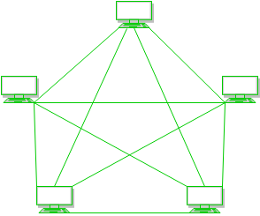
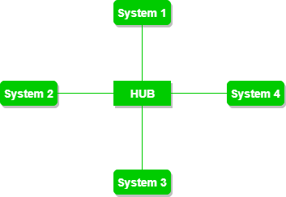

The arrangement of a network which comprises of nodes and connecting lines via sender and receiver is referred as network topology. The various network topologies are :
a) Mesh Topology :
In mesh topology, every device is connected to another device via particular channel.

Figure 1 : Every device is connected with another via dedicated channels. These channels are known as links.
- If suppose, N number of devices are connected with each other in mesh topology, then total number of ports that is required by each device is N-1. In the Figure 1, there are 5 devices connected to each other, hence total number of ports required is 4.
- If suppose, N number of devices are connected with each other in mesh topology, then total number of dedicated links required to connect them is NC2 i.e. N(N-1)/2. In the Figure 1, there are 5 devices connected to each other, hence total number of links required is 5*4/2 = 10.
Advantages of this topology :
- It is robust.
- Fault is diagnosed easily. Data is reliable because data is transferred among the devices through dedicated channels or links.
- Provides security and privacy.
Problems with this topology :
- Installation and configuration is difficult.
- Cost of cables are high as bulk wiring is required, hence suitable for less number of devices.
- Cost of maintenance is high.
b) Star Topology :
In star topology, all the devices are connected to a single hub through a cable. This hub is the central node and all others nodes are connected to the central node. The hub can be passive in nature i.e. not intelligent hub such as broadcasting devices, at the same time the hub can be intelligent known as active hubs. Active hubs have repeaters in them.

Figure 2 : A star topology having four systems connected to single point of connection i.e. hub.
Advantages of this topology :
- If N devices are connected to each other in star topology, then the number of cables required to connect them is N. So, it is easy to set up.
- Each device require only 1 port i.e. to connect to the hub.
Problems with this topology :
- If the concentrator (hub) on which the whole topology relies fails, the whole system will crash down.
- Cost of installation is high.
- Performance is based on the single concentrator i.e. hub.
c) Bus Topology :
Bus topology is a network type in which every computer and network device is connected to single cable. It transmits the data from one end to another in single direction. No bi-directional feature is in bus topology.

Figure 3 : A bus topology with shared backbone cable. The nodes are connected to the channel via drop lines.
Advantages of this topology :
- If N devices are connected to each other in bus topology, then the number of cables required to connect them is 1 which is known as backbone cable and N drop lines are required.
- Cost of the cable is less as compared to other topology, but it is used to built small networks.
Problems with this topology :
- If the common cable fails, then the whole system will crash down.
- If the network traffic is heavy, it increases collisions in the network. To avoid this, various protocols are used in MAC layer known as Pure Aloha, Slotted Aloha, CSMA/CD etc.
d) Ring Topology :
In this topology, it forms a ring connecting a devices with its exactly two neighbouring devices.

Figure 4 : A ring topology comprises of 4 stations connected with each forming a ring..
The following operations takes place in ring topology are :
- One station is known as monitor station which takes all the responsibility to perform the operations.
- To transmit the data, station has to hold the token. After the transmission is done, the token is to be released for other stations to use.
- When no station is transmitting the data, then the token will circulate in the ring.
- There are two types of token release techniques : Early token release releases the token just after the transmitting the data and Delay token release releases the token after the acknowledgement is received from the receiver.
Advantages of this topology :
- The possibility of collision is minimum in this type of topology.
- Cheap to install and expand.
Problems with this topology :
- Troubleshooting is difficult in this topology.
- Addition of stations in between or removal of stations can disturb the whole topology.
e) Hybrid Topology :
This topology is a collection of two or more topologies which are described above. This is a scalable topology which can be expanded easily. It is reliable one but at the same it is a costly topology.

Figure 5 : A hybrid topology which is a combination of ring and star topology.